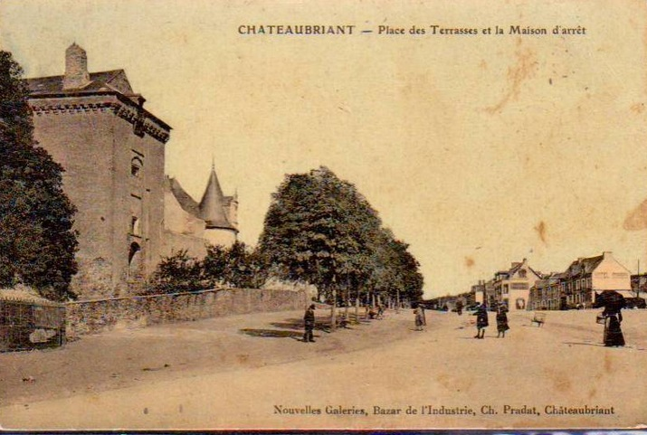
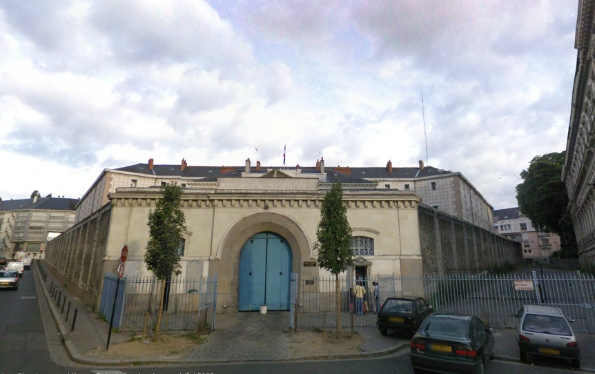
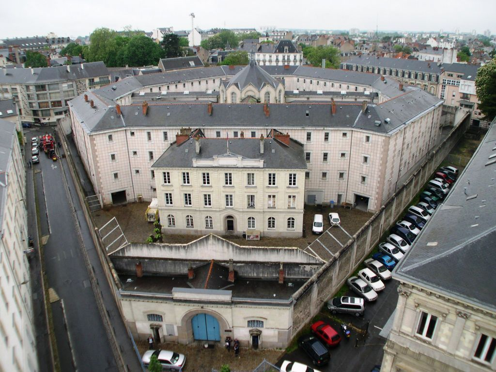
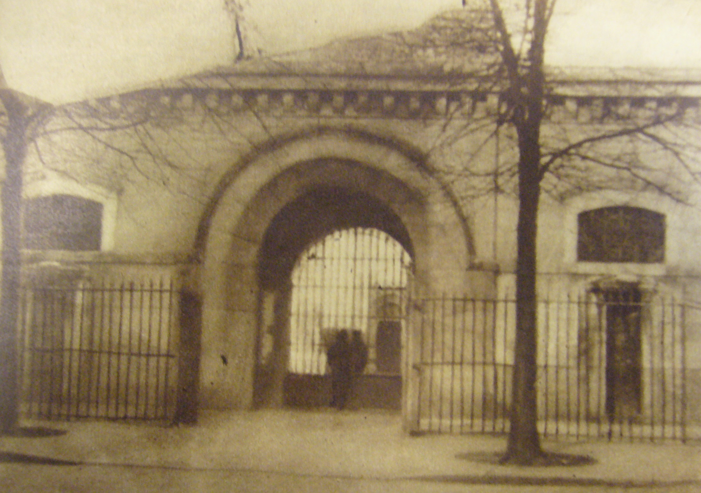
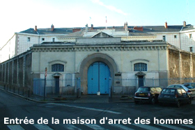
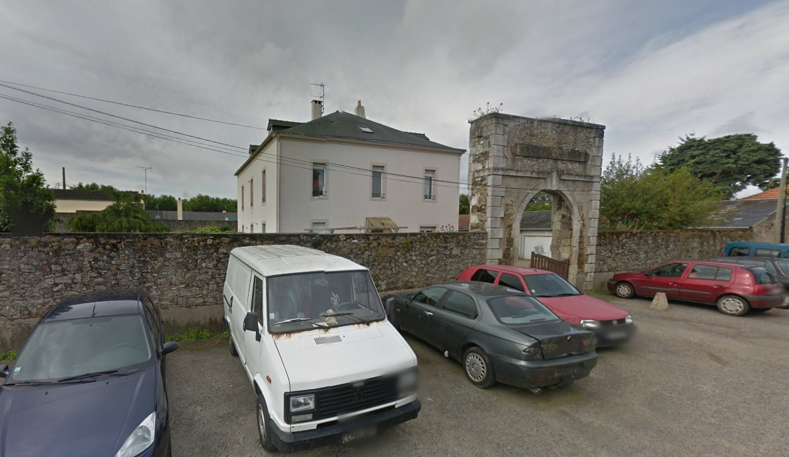
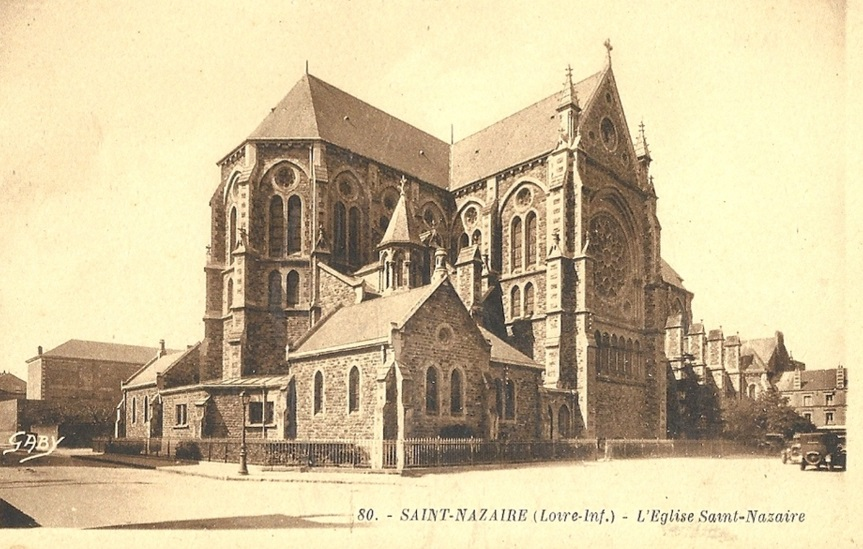
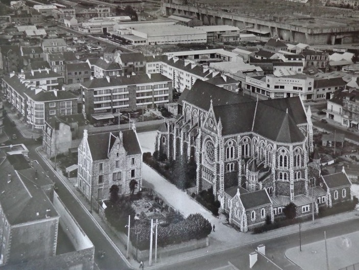

| Département | Images | Ville | Nom | Adresse | Période | Capacité | Histoire du lieu | Nombre d'exécutions |
| Loire-Atlantique (44) | Ancenis | Maison d'arrêt | Place de la Liberté (impasse Tartifume) | -1926 | Située à l'arrière du palais de justice - rue de Charost. Voici un article paru dans "L'Ouest-Éclair" du 27 mars 1932 : LA GAZETTE DU CAPITAINE GULLIVER Chamfort, auquel la vie mondaine devint insupportable et qui s'adonna de banne heure à la retraite, assurait que pour bien travailler, il fallait pouvoir vivre en négligé et qu'un écrivain qui devait se faire friser chaque jour était incapable de fournir quelque chose de bon. Il souhaitait aussi vivre dans une prison pour y écrire en paix. (Retenez bien que le jour où les comités révolutionnaires le mirent en geôle, il tenta de se tuer pour ne pas livrer aux sectaires la peau d'un homme libre). La vérité, c'est que l'emprisonnement n'est agréable que lorsqu'on est propriétaire de sa prison. Voilà une volupté que les cénobites vont pouvoir s'offrir. En effet, la prison d'Ancenis sera vendue par adjudication le 30 mars. Son annexe, le Palais de Justice sera vendu par la même occasion. Il n'y a qu'un pas à faire pour que la maison du juge soit celle du condamné. C'est-à-dire que les locaux conviendraient très bien, l'un pour un gendre, l'autre pour sa belle famille. L'affiche est assez alléchante. Le Palais de Justice comprenant une maison d'habitation, possède deux étages et un jardin, le tout contenant 20 ares. Mise à prix, 100.000 frs. Les balances de la justice seront vendues à part. La justice elle-même n'est pas à vendre, chacun le sait. La prison est située place de la Liberté. Elle se compose d'un corps de bâtiment avec cour intérieure et d'un autre bâtiment, sis au midi avec un appentis, (On demande des apprentis prisonniers). L'ensemble de la propriété est entouré – cela n'étonnera personne - de murs élevés qui seront fort utiles pour y développer des espaliers. Toutes les fenêtres sont agréablement garnies de barreaux de fer forgé. La porte de la prison a un caractère fort aimable. Il existe également une petite bande de jardin en lisière (comme les chaussons qu'on y fabrique). La cour intérieure de la prison est pavée - tel l'enfer - de bonnes intentions, mise à prix 50.000 francs, qui représentent les détournements du dernier prisonnier interné. Jouissance de suite. Nous ne doutons pas qu'on se pressera, mercredi, aux portes de la prison d'Ancenis. Ancenis ! douce ville baignée de la douceur angevine, comment si longtemps as-tu pu abriter des prisonniers ! Cela m'étonne de toi. Il est vrai qu'on m'a conté qu'un des derniers condamnés que les murs de ta prison abritèrent eut un mot plein de candeur. Condamné à mort, il devait être transféré à Nantes. Le matin de l'exécution, le Procureur de la République, homme au cœur sensible, lui dit : « Mon pauvre ami, l'heure est venue de payer votre dette à la société ; mais désireux que vous ne partiez pas avec un trop mauvais souvenir des hommes, je viens vous demander quel serait votre dernier désir, je vous promets de l'exaucer. » Et le condamné d'Ancenis répondit « Je voudrais apprendre l'anglais. » Samuel GULLIVER, ancien capitaine de navire |
Aucune exécution | ||
| Loire-Atlantique (44) |  |
Châteaubriant | Maison d'arrêt | Esplanade des Terrasses/Place Charles de Gaulle | 1820-1845, 1855-1926, 1931-1934 | L'histoire de la prison de Châteaubriant, c'est celle du château local. Construit en bois au cours du XIe siècle, amélioré en dur au siècle suivant, le château n'a cessé de s'étendre au fil du temps, d'abord sous le pavillon de la famille de Brient, puis de Dinan. La partie du château qui finira vouée à l'incarcération se nomme le Pavillon des Champs : construit durant le XIVe siècle, il marque l'entrée de la basse-cour. Amélioré après 1530, à l'instar du reste du château, pour perdre son allure trop médiévale, il comprenait un pont-levis retiré probablement vers 1820, au moment où l'on combla une partie des douves. Françoise de Dinan, après un siège terrible en 1488 lors de la guerre opposant la France à la Bretagne, lance une incroyable campagne de travaux dont elle ne verra pas la fin et qui seront achevés par son petit-fils, Jean de Laval, gouverneur de Bretagne. Sans enfants, en 1543, Jean cède son bien en héritage à la famille de Montmorency, qui s'en désintéresse peu ou prou, et le perd avec la déchéance d'Henri II de Montmorency, "guillotiné" à Toulouse en 1632 pour complot contre Richelieu. C'est la famille Condé qui en a désormais la jouissance, et ce jusqu'à la Révolution, mais une fois encore, l'éloignement des propriétaires fait que le château est plus ou moins abandonné, et la ville y installe certaines de ses administrations. Dans la continuité, à la Révolution, on use des lieux pour héberger la Garde nationale, pour servir d'entrepôt, et enfin, en 1797, la gendarmerie y installe ses quartiers. Le prince Louis V de Bourbon-Condé, expatrié dès 1789, ne se manifestera à nouveau qu'en 1815, quand la Restauration lui rendra peu à peu la pleine propriété de son bien. Mais en 1819, le prince entend bien vendre le tout, mais refuse net toute tractation avec une administration dont il se méfie. Aussi, c'est le maire, Martin Connesson, qui achète avec ses propres deniers le château, avant de vendre le Pavillon des Champs à la Loire-Inférieure pour que la prison y soit établie, et le reste à la ville pour y installer le tribunal (dans le logis Jean de Laval) et la mairie - sauf un terrain qu'il garde pour y faire édifier, dès 1822, un hôtel particulier. Mais en 1845, incapable de gérer l'imposant domaine, ayant même songé à sa démolition partielle, la ville revend l'intégralité des lieux au duc d'Aumale, qui ne garde le château que huit ans - forçant toutefois la gendarmerie, la prison et le palais de justice à fermer. En 1853, le conseil général, nouveau propriétaire, y installe la sous-préfecture - l'ex-hôtel Connesson devenant la résidence du sous-préfet -, et deux ans plus tard, la justice regagne ses anciens quartiers. Monument historique dès 1840, puis déclassé en 1887 à la demande du conseil général car trop coûteux à entretenir, il le redevient pour de bon en 1921. La prison est la première entité à quitter les lieux. La gendarmerie fera de même en 1971, puis la bibliothèque en 2006, le tribunal en 2009 et l'administration de la sous-préfecture en 2012... même si le sous-préfet continue à résider dans l'hôtel Connesson. Depuis, les lieux sont en restauration et si pour l'heure, le Bâtiment des Gardes accueille depuis assez longtemps des expositions, on peut songer au cours des années à venir à une ouverture progressive des bâtiments restés jusqu'alors fermés au public. | Aucune exécution | |
| Loire-Atlantique (44) | Nantes | Maison d'arrêt "neuve" La Fayette | Rue La Fayette | 1827-1869 | A Nantes, en 1824, on décidée de construire une nouvelle prison pour remplacer l'ancestrale geôle du Bouffay, en service depuis plus de trois siècles, en particulier pour préserver les habitants de la place du Bouffay du spectacle des exécutions capitales. Le projet planifié par l'architecte départemental Ogée, prend naissance sur les anciens fossés Mercoeur, à une certaine distance du centre-ville d'alors. Dès 1830, on supplicie place Viarme - qui servait déjà de lieu d'exécutions militaires, le Bouffay restant cependant lieu d'exposition pour les condamnés aux travaux forcés. Mais le hic arrive rapidement : dès 1843, à cause de son insalubrité causée par de fréquentes inondations, décision est de construire un pôle judiciaire gendarmerie, pdj et prison donnant sur la place voisine. Détruite après ouverture de sa remplaçante, on y construit en 1878 l’actuel lycée Jules Verne. | |||
| Loire-Atlantique (44) |     |
Nantes | Maison d'arrêt Lafayette | 9, rue Descartes | 1867-2012 | 297 places, 46 surveillants (1962) | En forme de losange, 400 occupants en 2012. Suivant le système de 1853. Cellulaire dès 1875. Voisine des palais de justice (construit en 1852) et de la caserne de gendarmerie (en 1865). Rénovée en 1988. Fermée le 03 juin 2012. Partiellement démolie en 2013 pour construire des logements à la place. | Cinq exécutions en 1911, 1919, 1920, 1947 et 1951. |
| Loire-Atlantique (44) |  |
Paimboeuf | Maison d'arrêt | 12, place de la Maison d'Arrêt | 1840-1926 | Avant la Révolution, les prisonniers de Paimboeuf étaient enfermés dans une tour en bord de Loire, sans doute plus qu'insalubre, jusqu'à ce que la ville décide d'y remédier, vers 1785. On enferme alors les détenus dans l'ancien tribunal de la Guerche, mais ce moyen ne satisfait pas, et dès 1809, on songe à l'édification d'une prison neuve. Les plans de l'architecte Crucy ne semblent pas convenir, le second projet, proposé en 1820 par Jean-François Ogée près du cimetière de l'hôpital, pas davantage. En 1834, le troisième essai est bon, et l'idée de Saint-Félix-Seheult validée. Au sud de la caserne de gendarmerie et à proximité immédiate du tribunal, situés tous deux rue Neuve (actuelle rue Jubau), sur une parcelle appartenant à une famille Leroux de Nantes et servant... à stocker le fumier, la prison édifiée peu avant 1840 est un bâtiment très simple, carré, sur deux niveaux, accessible par une placette dépendante de la rue Pierre Chevry. Après sa fermeture, rachetée en 1932 par l'entrepreneur Demée, on se contenta de démolir les hautes murailles, conservant la porte d'entrée monumentale et faisant de l'ancienne maison d'arrêt une résidence d'habitation. | Aucune exécution | |
| Loire-Atlantique (44) |   |
Saint-Nazaire | Maison d'arrêt | 1, rue du Croisic | -1990 | 76 places, 13 surveillants (1962) | La prison se trouve "à l'ombre" de l'église homonyme de la ville. Sur les deux photos, on la voit à l'angle, en bas à gauche. Jamais la guillotine ne fonctionna à ses portes, même si à trois reprises, en 1891 et 1899, elle fut dressée à 300 mètres de là, place de la République - actuelle place François Blancho. Démolie en octobre 2003, remplacée par le bâtiment de Silène-Albert Londres. Le fronton a été envoyé à l'Ecomusée. Un lien vers des photos de la prison en cours de démolition. |
Aucune exécution |
{kind=link}
{kind=link}
{kind=link}
{kind=link}
{kind=link}
{kind=link}
{kind=link}
{kind=link}
{kind=link}